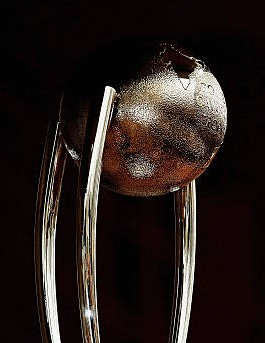

The Border-Gavaskar Trophy
The Border–Gavaskar Trophy is an International Test cricket trophy played between India and Australia. The series is named after distinguished former captains, Australia's Allan Border and India's Sunil Gavaskar. It is played via Test series scheduled using International Cricket Council's Future Tours Programme. The winner of a Test series wins the trophy. If a series is drawn, the country holding the trophy retains it. Given the competitive nature of the India-Australia rivalry and the high standings of both teams, the Border-Gavaskar trophy is considered to be one of the most prestigious bilateral trophies in 5-day cricket.
As of March 2023, India retained the trophy after defeating Australia 2–1 in the 2023 series.
In competition for the trophy since 1996, Indian Sachin Tendulkar has been the most successful batsman, scoring 3262 runs from 65 innings.[1] Australian Nathan Lyon is the most successful bowler, taking 116 wickets over 26 matches at an average of 32.40.[2]
Background
Unofficial Test series
The first ever cricket encounter between India and Australia was Australia's 1935-36 tour of India to play a series of four unofficial Tests. It was followed by the Australian Services cricket team which toured India in 1945-46.
Test series and one-off encounters not under the trophy
India's 1947–48 tour of Australia was its first after independence and included the first Test match and series between the two teams. The tours were irregularly scheduled with long gaps between them. Australia and India faced each other in the 2023 World Test Championship final, the first Test since 1991–92 between the two teams where the Border–Gavaskar Trophy was not contested.[3]
| Season | Host | Tests | Australia | India | Draws | Ties | Result | Holder | Player of the Series |
|---|---|---|---|---|---|---|---|---|---|
| 1996–97 | India | 1 | 0 | 1 | 0 | 0 | India | India | Nayan Mongia |
| 1997–98 | India | 3 | 1 | 2 | 0 | 0 | India | India | Sachin Tendulkar |
| 1999–2000 | Australia | 3 | 3 | 0 | 0 | 0 | Australia | Australia | Sachin Tendulkar |
| 2000–01 | India | 3 | 1 | 2 | 0 | 0 | India | India | Harbhajan Singh |
| 2003–04 | Australia | 4 | 1 | 1 | 2 | 0 | Drawn | India | Rahul Dravid |
| 2004–05 | India | 4 | 2 | 1 | 1 | 0 | Australia | Australia | Damien Martyn |
| 2007–08 | Australia | 4 | 2 | 1 | 1 | 0 | Australia | Australia | Brett Lee |
| 2008–09 | India | 4 | 0 | 2 | 2 | 0 | India | India | Ishant Sharma |
| 2010–11 | India | 2 | 0 | 2 | 0 | 0 | India | India | Sachin Tendulkar |
| 2011–12 | Australia | 4 | 4 | 0 | 0 | 0 | Australia | Australia | Michael Clarke |
| 2012–13 | India | 4 | 0 | 4 | 0 | 0 | India | India | Ravichandran Ashwin |
| 2014–15 | Australia | 4 | 2 | 0 | 2 | 0 | Australia | Australia | Steve Smith |
| 2016–17 | India | 4 | 1 | 2 | 1 | 0 | India | India | Ravindra Jadeja |
| 2018–19 | Australia | 4 | 1 | 2 | 1 | 0 | India | India | Cheteshwar Pujara |
| 2020–21 | Australia | 4 | 1 | 2 | 1 | 0 | India | India | Pat Cummins |
| 2022–23 | India | 4 | 1 | 2 | 1 | 0 | India | India | Ravindra Jadeja |
| 2024–25 | Australia | 5 | - | - | - | - | - | - | - |
Series summary
The Border–Gavaskar Trophy is one of the premier bilateral trophies in Test cricket. Both teams have a reputation of being difficult to beat at home. This is borne out by India winning 8 out of 9 series held in India, and Australia winning 5 out of 8 series held in Australia, as of the conclusion of the 2022–23 series. The away wins achieved by Australia (2004–05) and India (2018–19 and 2020–21) have earned places in cricket folklore. Both teams have achieved similar number of Test and series wins, and the trophy has changed hands frequently. The competitiveness of the series is also reflected in that in both 2000–01 and 2007–08, it was India who ended Australian streaks of 16 consecutive Test wins. The 2000–01 series was labelled as the "final frontier" for Australia by their captain Steve Waugh due to the difficulty of winning in India, and was closely fought on both sides.
1997–98 series
The Australian cricket team headed over to India in February–March 1998 looking to get their first win in India since the 1969–70 tour.[4] The first Test in Chennai saw Sachin Tendulkar scoring 155 from 191 balls to give India the win by 179 runs with Australia crumbling under the spin trio of Anil Kumble, Venkatapathy Raju and Rajesh Chauhan as they got out on 168.[5] The second Test at Kolkata saw another dominating performance from one of the Indian batsman with Mohammad Azharuddin 163 runs in India's only innings as India won the Test match by an innings and keeping the Border–Gavaskar Trophy in India.
The final Test at Bangalore saw Sachin Tendulkar get his second hundred of the series. In response, Mark Waugh got the Australians first century of the series with 153*. Australia with the help of Mark Taylor century would chase down the 194 runs that India set for them as they got the consolation win from the series to end the series at 2–1 in favour of India.[7] At the end of the tour, Shane Warne famously said that he would be having nightmares of Tendulkar hitting him for sixes and that only Bradman was in his class.
1999–2000 series
Heading into the first edition of the Border–Gavaskar Trophy, it was predicted to see an Australian win based on the back of the 3–0 series win at home against Pakistan.[9] In the first Test at Adelaide, Australia got the win based from a first innings century from captain Steve Waugh while Damien Fleming's five wicket haul in the second innings saw the collapse of India who was bowled for 110 runs to give Australia a 285 run win.[10] Australia would take home the second Test in Melbourne by 180 runs despite Tendulkar's century in the first innings. This Test also saw the debut of Australian bowler, Brett Lee who would go on to reach seventy two Test caps for Australia.
The final Test in Sydney saw another Australia win, this time by an innings and 141 runs. This was done with centuries from Justin Langer (223) and Ricky Ponting (141*) as Australia scored 5–552 in their only innings. Despite an effort from V. V. S. Laxman who scored 167 runs from 198 balls in the second innings, the damage was done in the first innings with India being bowled out for 150 with Glenn McGrath leading the charge as he got 10 wickets for the match.
2000–01 series
The 2000–01 series commenced on 27 February 2001 and concluded on 22 March 2001. The series consisted of three tests, played in Mumbai, Kolkata and Chennai. India won the series 2–1.
The first Test was played in Mumbai on 27 February-1 March 2001. The game was over in only three days as Australia dominated from the beginning, putting India in to bat and then dismissing them for only 176 runs. Glenn McGrath took 3–19 and Shane Warne 4–47, Sachin Tendulkar top scoring for India with 76. Australia responded with 349 on the backs of centuries by Matthew Hayden (119) and Adam Gilchrist (122). Harbhajan Singh took 4–121. India's second innings was barely better than their first, Tendulkar again top scoring with 65 in a total of 219. Needing only 47 runs to win, Australia's openers knocked them off in 7 overs, taking Australia to a 10 wicket victory and a 1–0 lead in the series.
The second Test at Eden Gardens in Kolkata on 11 March-15 March is regarded by many as one of the most exciting games of cricket ever played. It began with Australia electing to bat and scoring 445, captain Steve Waugh contributing 110. Harbhajan Singh took 7–123, including a hat-trick, which was the first Test hat-trick by an Indian bowler in 69 years of Indian cricketing history. India's woes continued, being dismissed for only 171, with McGrath taking 4–18. Australia enforced the follow-on and, at the end of day 3, India were 254/4, still 20 runs behind forcing Australia to bat again. For many spectators, commentators, and even players, the match and the series were as good as lost for India.
The fourth day saw the turnaround. V.V.S. Laxman and Rahul Dravid batted the entire day, never offering a chance, and ran the Australian fielders ragged as Waugh called on nine different bowlers to try to break the partnership. Laxman and Dravid added 376 runs, taking India to 589/4 and a commanding lead in the game. In the process, Laxman set a new individual high score record for India, surpassing Sunil Gavaskar's 236. Laxman was finally dismissed the next day on 281. Dravid made 180, and India declared on day 5 at 657/7, setting Australia an almost impossible target of 384 runs. Australia did not immediately crumble under the reversed pressure; at tea, they were 161/3 for their final innings, and a draw looked the most likely result. Then, the Australians lost 5 wickets for 8 in a span of 31 balls, with Harbhajan taking the first two wickets in the same over and Tendulkar taking the other three. Australia fell for 212 all out, with Harbhajan leading the bowling attack with 6–73. India had come back from the dead and recorded a stunning 171-run victory to level the series 1–1. They were only the third team in history to win a Test match after following on.
The Third Test began at Chennai on 18 March with high expectations of a hard-fought series decider. Australia won the toss for the third time and elected to bat. Hayden batted through the first day for an eventual total of 203, but the rest of Australia's team contributed little to the total of 391. Again, Harbhajan Singh was the destroyer, taking 7–133. India pushed to 501 on the back of Tendulkar's 126. Australia ended day 4 at 241/7, a precarious lead of 131 runs. Early on day 5, Harbhajan again ran through the Australian tail, taking 8–84 and his series tally to an astounding 32 wickets, leaving Australia all out for 264. India had a target of 155 to chase, and plenty of time to do it. The only question was whether Australia's bowlers could get them out first. In 42 nail-biting overs, India steadily lost wickets, sinking to 135/7, a tantalising 20 runs short of victory, but in dire danger of losing their last batsmen before they could score them. The 8th wicket fell at 151, 4 runs short of victory, and it was left to wicket-keeper Sameer Dighe and Harbhajan Singh to see out the end. Harbhajan Singh scored the winning runs past point and sealed the game and an incredible comeback series victory for India. The series victory for India meant that Australia had still not won a series in India for over 30 years.
2003–04 series
The Indian cricket team toured Australia during November 2003 – February 2004. The tour included a four-Test series, which commenced on 4 December 2003 and concluded on 6 January 2004, with Test matches in Brisbane, Adelaide, Melbourne and Sydney. The Test series was drawn, 1–1, and hence India retained the Border–Gavaskar Trophy.
Before this tour, India had a poor record in Test matches away from home having won just 18 out of 176 Tests. The previous tour to Australia in 1999–2000 had resulted in a 3–0 defeat and India had not won a Test match in Australia since 1981.
The first Test match was played at Brisbane from 4 to 8 December. In a rain-affected match, Australia got off to a good start with Justin Langer scoring a hundred. Scores from the remaining three batsmen out of the top four (Hayden (37), Ponting (54) and Martyn (42)) took Australia to 262 for the loss of just two wickets at the end of first day's play. Only 18 overs were possible on the second day but the Indians picked up seven Australian wickets for the addition of only 61 runs. The third day was again affected by rain and only six overs were bowled, at the end of which, India were 11 for no loss. India started the fourth day well, but three quick wickets reduced them to 3–62. But Sourav Ganguly (144) and VVS Laxman (75) took India to 409 and a first innings lead of 86. When the last day started, only the first innings had been completed, and the match appeared to be heading for a draw. However, Australia scored quick runs as four of the top five batsmen scored fifties. Matthew Hayden scored 99 runs in 98 balls faced, as Australia declared on 284. India had scored 73 runs out of the target of 199, when play was stopped with the consent of both teams. Sourav Ganguly was Man of the Match.
The second match was played at the Adelaide Oval from 12 to 16 December. Australia won the toss and elected to bat. Ricky Ponting was the highlight as he scored 242 runs, while contributions from Simon Katich and Jason Gillespie lower down the order took Australia to a first innings score of 556. Exactly 400 of these runs were scored on the first day. India started their first innings well, but four quick wickets meant that they were in trouble at 4–85. But Dravid and Laxman, the heroes of Eden Gardens in 2001, put together a partnership which took India to 388 before Laxman was dismissed for 148. Dravid went on to string together partnerships with the tail, and was the last man dismissed as India scored 523. Rahul Dravid scored 233.
The second innings started just before lunch on the fourth day, with Australia leading by 33 first innings runs. But wickets fell all too regularly and only the lower middle order put up any resistance as Ajit Agarkar picked up six wickets. Australia were bowled out for 196. India started their second innings chasing 230 runs to win. First innings hero Rahul Dravid who was dropped by Adam Gilchrist scored an unbeaten 72 and, fittingly, hit the winning runs as India won by four wickets. This was the first win for India in Australia since February 1981. Rahul Dravid was Man of the Match. India led the series 1–0
The third Test match was the traditional Boxing Day Test played at Melbourne. India got off to a good start, with Virender Sehwag scoring 195, and ended the first day at 4–329. But in the first session on the second day, wickets fell quickly and India were bowled out for 366. Australia, in their first innings, put up 558 runs, with centuries from Hayden (136) and Ponting (257). This was Ponting's second double hundred in as many matches. Anil Kumble picked up six wickets.
India started the second innings 192 runs behind. Dravid (92) and Sourav Ganguly (73) were the only players to cross fifty, and India were bowled out for 286. This gave Australia a target of only 95, which they achieved for the loss of one wicket, levelling the series at 1–1. Ricky Ponting was Man of the Match for his 257.
The fourth and final Test was the New Year's Test at Sydney, notable also for being Steve Waugh's last Test match.
India won the toss and elected to bat first. The opening stand between Sehwag (72) and Chopra (45) was worth 123 runs. The spotlight, though, was on Sachin Tendulkar, who had not had success with the bat on the tour. He responded by scoring 241 unbeaten runs and put up 353 runs for the fourth wicket with Laxman (178). A cameo from 'keeper Parthiv Patel took India to 705–7 declared, India's highest-ever Test score. Australia started well, with Hayden and Langer putting up a 147-run opening stand. But they were in trouble at 7–350 before Katich and Gillespie put on 117 runs for the eighth wicket to take Australia to 474, Anil Kumble taking 8–141.
India started the second innings 231 runs ahead and requiring quick runs to force a result. Sehwag (47), Dravid (91*) and Tendulkar (60*) all contributed, as India raced to 211 in 43 overs to set Australia 443 to win. Four overs at the end of the fourth day produced no wickets and Australia had to play out the last day to save the Test, while India needed 10 wickets to win. The Australian batting responded well under pressure, with Langer, Ponting and Martyn scoring forties. But at 4–196, with more than one session to go, the match could have gone either way. However Steve Waugh, playing his last Test, and Simon Katich put the match out of India's reach. Waugh scored 80 and Katich was unbeaten on 77 as the match was drawn despite 4 more wickets for Kumble which gave him 12 wickets for the match itself. Despite Kumble's efforts on a flat wicket, Sachin Tendulkar was Man of the Match for his unbeaten scores of 241 and 60 in the match. The series score was maintained at 1–1.
Rahul Dravid was Man of the Series for 619 runs in four matches. The series was hailed as one of the best that had been played in Australia.
2004–05 series
The Australian cricket team toured India from 6 October 2004 to 5 November 2004 for a four-Test series. The series featured matches played at Bangalore, Chennai, Nagpur and Mumbai. Australia won the series 2–1. This was Shane Warne and Glenn McGrath's last tour of India. They came with the desire to end Australia's 35-year drought of winning a Test match series in India. Before this series India had performed poorly in tours of Sri Lanka and the Netherlands, and in the ICC Champions Trophy.
Australia won the first Test played at Bangalore comprehensively. The Indian batting order collapsed twice and they didn't look at any point that they could have made a match out of it. Michael Clarke, playing his first ever Test match, scored 151 runs to take Australia to a commanding position. Harbhajan Singh took another 10-wicket haul (5–146 and 6–78) in the match. Anil Kumble took his 400th wicket. Clarke was awarded Man of the Match.
Being 1–0 down in the series, India started the second Test match played between 14 and 18 October 2004 at Chennai on a positive note. They got rid of Australia in the first innings for a mere 235 runs. Earlier, Justin Langer (71) and Matthew Hayden (58) started the Australian innings with a bang. They contributed 136 runs for the opening wicket. When it looked as if Australia would dominate this Test as well, Anil Kumble struck consistently and produced a beautiful bowling spell in which he took 7 wickets for just 48 runs from his 17.3 overs. Australia's innings collapsed from 189–3 to 235 all out. In reply India scored 376 runs and took a commanding lead of 141 runs. Virender Sehwag scored a magnificent 155 runs, Mohammed Kaif on his comeback match scored 64 and was well supported by young Parthiv Patel (54). Shane Warne took 6 wickets for 125 runs, overtaking Muttiah Muralitharan as the leading wicket-taker in Test cricket with 537 wickets (though Muralitharan would overtake Warne in December 2007, almost a year after Warne's retirement in January of the same year). The top order of Australian innings collapsed again in the 2nd innings, but then Damien Martyn notched up a century (104) at the crucial time with the result being that the Australians had scored 369 runs in their second innings, setting a victory target of 229 runs for India to win. India had a good chance of winning the game, but rain on the final day prevented any chance of play, therefore, the match ended in a draw. Anil Kumble took 6 wickets for 133 runs and was awarded Man of the Match.
The third Test of the series was played between 26 and 30 October at the Vidarbha Cricket Association Ground at Nagpur. Australia won the match and series in four days. Australia posted 398 in their first innings, with Damien Martyn posting 114 runs with Michael Clarke making 91. In contrast, India played poorly in their first innings and none of their top order batsmen got going. The only batsman to make above 50 was Mohammed Kaif (55). Sachin Tendulkar, who returned from injury, made just 8 runs. India made 185 runs, 14 runs short of the follow-on. Australia rejected the follow-on and began their second innings, setting a target in excess of 500. But once again the Indians were bundled out for 200. None of the frontline batsman made a big score. Sehwag and Patel provided some hope but fell to the Australia's metronomic bowling. Australia won the third Test by 342 runs. Martyn was awarded Man of the Match. With this win, Australia won this Test series after 35 years of trying for success in India, a feat which has been termed the final frontier by Steve Waugh.
The fourth and final Test match was played between 3–7 November 2004 at the Wankhede Stadium, Mumbai. Having already lost the series, India made changes in the team. Patel, Akash Chopra, Ajit Agarkar and Yuvraj Singh were all dropped from the lineup. The first day of play was almost completely washed out by rain, with only 11 overs being bowled. India won the toss and elected to bat. The innings started on a bad note, losing 2 wickets on the first day itself. On the second day India was bowled out for their second-lowest score ever of 104 runs, with Rahul Dravid scoring the highest score in the innings of 31 runs. Jason Gillespie (4–29) was the main wicket taker for Australia. Australia's first innings also didn't last long, as they were bowled out on the same day for a score of 203 runs, with Martyn (55) top scoring. Murali Kartik (4–44) and Kumble (5–90) were the main wicket takers. 18 wickets fell in all on the second day of play. India made 205 runs in their second innings, with significant scores from V.V.S. Laxman (69) and Tendulkar (55). Michael Clarke (6–9) removed the tail order within 23 runs. Chasing 107 runs for victory, Australia lost wickets consistently throughout their second innings and were bowled out for 93 runs, giving India a victory by 13 runs. Harbhajan Singh (5–29) and Murali Kartik (3–32) took most of the wickets. Murali Kartik was named Man of the Match. This Test is one of the shortest Test matches ever played, lasting for only 2 complete days. The pitch prepared for the match had later come in for a lot of criticism by Ricky Ponting. Damien Martyn was named Man of the Series.
2007–08 series
The Indian cricket team toured Australia during December 2007 to March 2008. This was the last visit of former India Captain Sourav Ganguly to Australia before his retirement. The tour included a four-Test series, which commenced on 26 December 2007 and concluded 28 January 2008, with Test matches in Melbourne, Sydney, Perth and Adelaide. Australia won the series 2–1. Australia won the first Test in Melbourne by 337 runs within four days. Australia scored 343 runs in the first innings riding on Matthew Hayden's 124. In reply, India folded for 196 with Clark and Lee taking 4 wickets each. India was set a target of 499 runs which they never challenged. Australia won the second Test by 122 runs in Sydney on the 5th day. With only nine minutes to spare – Michael Clarke took 3 wickets in what would probably have been the second last over.
India fought back with a win in the third Test in Perth by 72 runs. Two changes were made to the Indian team for this game, dropping the out of form Yuvraj Singh, and Harbhajan Singh, and recalling Virender Sehwag and Irfan Pathan. Australia had also made two changes to their team. Chris Rogers was brought in to replace the injured Matthew Hayden to become the 399th Test player for Australia. Shaun Tait was brought in for tactical reasons to replace Brad Hogg as Australia went with a four-pronged pace attack. India won the toss and elected to bat and the changes were to have an immediate impact. Jaffer and Sehwag contributed for the first opening partnership above fifty of the tour. Dravid, now relieved of his opening duties, found some semblance of form and was dismissed just short of a century on 93 as the highest scorer of the innings as India reached 330.
Pathan's recall to the team was immediately successful, dismissing both Australian openers. Australia's top order collapsed, leaving them at 5–63, as they struggled with the swing bowling of the Indian pace attack. A century partnership between Symonds and Gilchrist helped Australia recover to 212, which gave India a lead of 118. In India's second innings, Sehwag again proved his worth as he scored 43 in 61 balls to give momentum at the top of the order. At the dismissal of Jaffer, Pathan came in as night-watchman and scored 46, the second highest score of the innings behind Laxman's 79. India were eventually dismissed for 294, leaving Australia the imposing target of 413 to win.
Australia were bowled out for 340, 73 runs short of their target, and India once again put a stop to an Australian 16 Test winning streak. Pathan again dismissed the two Australian openers, while Sehwag proved a useful contributor by dismissing Gilchrist and Lee. Australia's team changes proved unsuccessful, with Rogers having scores of 4 and 15, and Tait, wicketless in the match and bowled sparingly. Ponting, in a post match interview with Channel 9, laid the blame for the defeat on a poor first innings batting performance, while Kumble praised the contributions of his team and his young pace attack.
Normally, in Australia, during their era of dominance, the final matches of a series was usually a dead rubber. Thanks to India's emphatic performance in Perth, which could have provided for a good final match at Adelaide for people to watch. India once again won the toss and elected to bat first. India made one change, bringing back Harbhajan Singh in place of Wasim Jaffer. Australia made two changes, Hayden comes back after recovered from injury in place of Chris Rogers, erratic Tait gives a way to Brad Hogg. This Test was the last Test for wicket-keeper Adam Gilchrist.
Opening the innings with Pathan back-fired for India, as he got out early. On a balancing first day, India made total of 309–5, thanks to major contribution from Sachin Tendulkar's 39th ton. Tendulkar went unbeaten on 124 on the first day. On the second day, Sachin and Dhoni got out early, but a stubborn innings from Kumble and an attacking innings from Harbhajan took India past 500. Kumble was unlucky to miss a century and he was the last man to get out. Australia played with caution and they did not lose any wicket on the second day. Australia were at 62–0 at stumps.
Australia's openers went on to dominate and made a 159 for the opening wicket. At one stage Australia were 241–3. Australia were finally bowled out for 563. India's efforts went in to saving the Test match, but India once again lost Pathan early in the innings. India finished 4th day at 45–1. Sehwag went on to score 151. Even though other batsmen fell cheaply, his innings made sure that India would not lose the Test match. Kumble declared the India innings at 269/7 and the match finished early as a draw. Tendulkar was awarded Man of the Match.
2008–09 series
The first Test of the 2008–09 season was played at M. Chinnaswamy Stadium, Bangalore. This match ended in a draw. The second Test match was played at the PCA Stadium in Mohali, Punjab. The Indians dished out a clinical all-round performance to outclass Australia by a record 320 runs on Day 5 to lead the 4-Test series 1–0. This was the biggest win for India in Test match cricket excluding an innings victory. It was a historical match for India with Sachin Tendulkar who became the highest run scorer in Test match history surpassing record of 11,957 runs marks and on the way becoming the first man to score 12000 runs in Test cricket history. It was a historic outing for Sourav Ganguly too, as he passed 7000 runs in Test cricket and scored a century in the process. The Third Test match was played at the Feroz Shah Kotla in Delhi. Anil Kumble declared his retirement from Test matches after suffering from torn fingers. He was the captain of the Indian side in this game. The match ended in a draw and VVS Laxman was declared the Man of the Match. Gautam Gambhir and Laxman scored double hundreds in India's First Innings. The Fourth Test was played at the Vidarbha Cricket Association Stadium in Nagpur. India won by 172 runs to regain the coveted Border-Gavaskar trophy after a gap of four years. After setting the visitors a daunting target of 382 for victory in a turning fifth day track, India went on to dismiss the Aussies for 209 at just before the tea to wrap up the four-match series with a 2–0 margin. It turned out to be a perfect gift for Sourav Ganguly by his teammates in his farewell Test as they bowled out the Aussies in just about two sessions of play on the last day. Indian fast bowler Ishant Sharma was declared the man of the series.
2010–11 series
India won the 2-Test series 2–0. Sachin Tendulkar was declared the man of the series.
The first Test was played at PCA Stadium in Mohali, Punjab 1–5 October 2010. India won by one wicket. Zaheer Khan was named as the Man of the Match.
The first Test was an instant classic. Australia made 428 in its first innings. Opening batsman Shane Watson scored a century and Wicket keeper Tim Paine made a 92 to lead the charge. In reply India's top order almost contributed equally with Sachin Tendulkar scoring 98 and Suresh Raina scoring 86. India made 405 in their first innings. Indian bowlers led a surge in the second Innings to rout Australia to 192. India were set a target of 216. Wickets started to fall in the evening of 4th day with Ben Hilfenhaus taking the key wickets of Gambhir, Sehwag and Raina. The score stood at 55/4 at the end of 4th day's Play with Tendulkar playing with night watchman Zaheer Khan. Australia started the 5th day well to remove Zaheer Khan first. VVS Laxman who played late down the order because of his back injury joined Tendulkar for the 6th wicket. They improved the scoring rate considerably. However Tendulkar was out for 38 trying to play an upper late cut off Bollinger. MS Dhoni then followed Tendulkar as he was run out following a confusion with Raina who was a by runner for VVS Laxman. The score stood at 122/7. Harbhajan too was out pretty quickly facing just two deliveries. It looked all but over for India. India were 124/8 with an injury-ridden VVS Laxman and Ishant sharma at the crease and only Pragyan Ojha to follow. India still needed 92 runs to win with just two wickets remaining at lunch. It looked like a lost cause to India.
The post lunch session was one of the most dramatic sessions in Test history. VVS Laxman played one of his best knocks along with Ishant Sharma for most of the post lunch session. He was happy to give Ishant most of the strike with Ishant stone-walling the rest of the over. Occasional boundaries (mainly from Sharma) and early singles off every over had India slowly, but surely inching towards their target. In what seemed like forever, India crawled from 124/8 to 170, 180 and 190/8. Finally Ishant got out to a Ben Hilfenhaus lbw decision that replays showed was going down the leg side, with the score at 205. Pragyan Ojha, the last man for India joined Laxman at the crease. During Mitchell Johnson's over more drama followed with Ojha being clearly struck in line, but On-field Umpire Billy Bowden turned down the appeal. Pragyan Ojha tried to sneak a single when substitute fielder Steven Smith shied at the stumps. But unfortunately for Australia, no fielders where backing his throw. It went for four overthrows meaning India just needed 2 runs to win.
At this point of time, three results were possible (India win, Australia win and a Tie). Mitchell Johnson then strayed a delivery on to the leg side and Ojha did well to just push it past the wicket keeper. The Indian batsmen ran a couple and had won the match. VVS Laxman top scored in the second innings with an unbeaten 73 and once again proved himself a nemesis to Australia turning certain defeat into glorious victory similar to Kolkata 2001, Adelaide 2003.
With this win, it meant that India can hold onto the trophy even if it lost the next Test match as India won the 2008/09 series 2–0.
The second Test was played at M. Chinnaswamy Stadium in Bengaluru, 9–13 October. India won by 7 wickets. Sachin Tendulkar was named as the Man of the Match.
Sachin Tendulkar was the most successful batsmen, scoring 403 runs in four innings at an average of 134.33. Zaheer Khan was the leading wicket-taker with 12 wickets in two Tests.
2011–12 series
Australia won the first Test at the Melbourne Cricket Ground by 122 runs within 4 days. Australia scored 333 in their first innings with debutant Ed Cowan top scoring on 68. In reply India collapsed from 3/214 to 282 all out with Ben Hilfenhaus taking 5 wickets on his return to Test Cricket from injury. Australia then recovered from their own collapse to 4/27 with Ricky Ponting and Michael Hussey building a partnership of 115 in Australia's 2nd innings total of 240. India was set a target of 292, but regular wickets to the Australian pacemen saw them all out for 169. Man of the Match was awarded to James Pattinson with figures of 18*, 2/55, and 4/53. He also made 37*.
The second Test started with India collapsing for 191 after winning the toss on day one at the Sydney Cricket Ground. Australia in reply scored 659/4 with Michael Clarke scoring a triple century (329 not out), Michael Hussey scoring 150 not out and Ricky Ponting scoring 134. In reply, India folded up when trailing by 68 runs. Sachin Tendulkar scored 80 as Australia won the Test. The third Test started with India batting first, but only managed 161 runs in the first innings. The Australians replied with 369, including a century from 69 deliveries from David Warner, the fastest century by an opener. In the second innings, the Indians were bowled out for 171, and Australia won the match by an innings and 37 runs. Australia leads the series 3–0, and have regained the Border–Gavaskar Trophy.
The fourth Test started with Australia batting first, and notching up 7/604 declared with Michael Clarke and Ricky Ponting both scoring double centuries. India managed 272 runs in the first innings, with Virat Kohli scoring his maiden Test century. Australia did not enforce the follow-on, batting 5/167 declared to set India a target of 500 runs. India was bowled out for 201, 298 runs short. The player of the match was Peter Siddle, and the player of the series was Michael Clarke.
2012–13 series
In the first match of the series, Australia won the toss and batted first and scored 380 in the first innings. They started really well in the innings but Ravichandran Ashwin ripped through the middle order to restrict them. The Indian team started their first innings in a shaky manner by losing two early wickets. However, Sachin and Cheteshwar Pujara took the score over 100. After losing Pujara, India was again in a bad condition but Kohli scored a hundred and was not out on day 2. MS Dhoni scored a fantastic 224 to give India a strong lead. In their second innings, the Australians quickly lost their wickets to the Indian spinners. At one time, they were 180/9, however, Moises Henriques' 81* took the total score to 241. India chased down the target of 50 with the loss of two wickets and won the match. M. S. Dhoni was judged Man of the Match for his 224 in the first innings.
In the second Test, the Australian batting order collapsed and captain, Michael Clarke, took a surprising decision to declare their innings at 237/9 in the hope to let India play the remaining three overs of the day. But India were 5–0 at the end of three overs. India lost Virender Sehwag early next day but a fantastic partnership between Murali Vijay and Cheteshwar Pujara saw India surpass a total of 500. Pujara scored 204 runs while Vijay scored 167. In their second innings, the Australian batting order collapsed for a mere 131 and India won the match by an innings and 135 runs, thus, gaining a lead of 2–0 in the series. Cheteshwar Pujara was judged Man of the Match for his 204.
The first day of the third Test at Chandigarh was washed away by rain. This time Australia did well to score above 400 with half centuries by Ed Cowan and David Warner while Steven Smith and Mitchell Starc missing out on centuries. Starc missed it for 99 and out while Smith was out on 92. But debutant Shikhar Dhawan who had come in for Sehwag made a record 187 runs on debut and became the highest run scorer for India while playing on debut. Vijay also hit consecutive centuries and took the total to 499. The Australian team were dismissed for 223 after the good work by the bowlers and India got a target of 133 on the last day. With wickets falling at regular intervals and shortage of time, the match had become thrilling whether India would win or the match be drawn. But Jadeja and Dhoni ensured the 3–0 series win. Debutant Shikhar Dhawan was judged Man of the Match.
The fourth Test saw a fighting spirit by the Aussies when they scored 262 but dismissed India for 272 and not letting them take a lead bigger than 10 runs. The first two days were filled with sledging by the Aussies. On day two, it was being said that the match was evenly poised but continuous collapse of Australia on day three did not enable them to set a good target despite fifties by Peter Siddle in both innings—a record for half-centuries in both innings of a Test match by a number 9 batsman. India's target of 155 was easily achieved on the same day with contribution from Kohli's 41, Dhoni's 12 not out and Pujara not out on 82. Dhoni hit the winning runs and India created history by winning four Test matches in a series for the first time. Ravindra Jadeja was awarded the Man of the Match award for his career-best 5–58 and Ravichandran Ashwin was named the Man of the Series for his 29 wickets in four matches.
2014–15 series
In the first match of the series, Australia won the toss and batted first, scoring 517/7d in the first innings. This was the Test captaincy debut for Virat Kohli. The Australian batting started the innings with fireworks, with David Warner's 145 run knock in just 163 balls. Steve Smith played an unbeaten innings of 162. Day 2 was wasted due to rain. During the third day the Indian batting order managed to score 444, conceding a lead of 73 runs to Australia, with Virat Kohli scoring 115 runs. Australia then scored 290/5d in their second innings, with David Warner again scoring a ton. In the fourth innings, India were bowled out for 315, despite another Kohli ton, handing a 48 run win to Australia. Nathan Lyon was declared the Man of the Match for his 12-wicket haul.
The second match was again won by Australia, giving them a 2–0 lead in the series. The final two Tests were drawn, meaning that Australia won the series 2–0, and regained the Border-Gavaskar trophy.
The first Test was considered as a tribute to Australian cricketer Phillip Hughes. The tribute was given by wearing a black band which had 408 written on it, which was the cap number of Hughes. The batsmen gave him tribute on scoring landmarks and scoring 63 runs. Hughes died after being struck by a bouncer while playing for South Australia in a Sheffield Shield game, while he was being widely considered as a long-term Australian Test representative.
2016–17 series
In the first match of the series, Australia won the toss and batted first. DRS was used for the first time in the Border–Gavaskar Trophy in this series,[18][19] although HotSpot is not used. Australia played the first Test match in Pune. Australia won by 333 runs courtesy of 12 wickets of Steve O'Keefe.
In the second Test match that took place in Bangalore, Nathan Lyon took 8 for 50 in India's first innings, as Australia dominated day one. But with the two fifties of opener KL Rahul, 92 runs by Cheteshwar Pujara and six wicket haul by Ravichandran Ashwin sealed the second match for India to win by 75 runs and level the series 1–1.[
The third Test was drawn and the fourth was won by India who thus achieved a 2–1 series victory—their seventh Border-Gavaskar trophy.
2018–19 series
Heading into the 2018–19 series, Australia was without its top-order batsman David Warner, Steve Smith and Cameron Bancroft due to the 2018 Australian ball-tampering scandal in Cape Town against South Africa.[23] Ishant Sharma prior to the start of the series, stated "That's the biggest opportunity for us right now". This was proven with Australian media stating that it was the best opportunity for India to win the trophy and the series in Australia.
The first Test in Adelaide saw Cheteshwar Pujara score 123 and 71 in forging a considerable last-innings target of 322 for Australia. Despite a worthy 5th-day battle by Australia's tail-enders, India won by 31 runs —their first win in Australia since 2008.
The second Test was held at Perth Stadium and saw Australia levelling the series at 1–1 with a 146 run win.[29] This was done by Nathan Lyon eight wickets in the two innings as he received the Man of the Match. During that match, Virat Kohli scored his 25th century as he scored 123 in the first innings as India tail-enders collapsed in the second innings with Lyon and Starc doing the damage as India collapsed for only 140
The third Test in Melbourne saw Pujara scoring his second century of the Test series—106—before India declared its first innings closed at 443/7. Australia (151 and 261) were finally crushed by 137 runs. Jasprit Bumrah took 6–33 in the first innings and another three in the second innings, to be awarded as Man of the Match. This win meant India retained the Border–Gavaskar Trophy and could create history as the first Indian team to win a series in Australia.
The fourth and final Test at the Sydney Cricket Ground ended in a draw but not before Pujara top-scored for India in their only innings with 193, with help from Rishabh Pant who scored 159. India bowled Australia out for 300 which forced a follow-on for the first time since 1988 before the match was rained out.Pujara was the player of the series after scoring 521 runs over the whole series
2020–21 series
Entering the series, India held the Border–Gavaskar Trophy after winning in Australia, 2–1 in 2018–19 and at home, 2–1 in 2017. The last time Australia had won a series was at home, 2–0 in 2014–15.
The first Test in Adelaide was a day-night Test in which India won the toss and elected to bat first. India scored 244 in their first innings, led by captain Virat Kohli who scored 74 before being run out. In reply, Australia were bowled out for 191, giving India a lead of 53. Australian captain Tim Paine was the top-scorer in the innings; he finished on 73* off 99 balls. The second innings saw India register their lowest total in Test cricket, just 36.It was also the lowest Test total in the 21st century. No batsman reached double figures, only the second time ever in Test cricket. India, in the due course of this innings, lost another seamer in Mohammed Shami to a forearm fracture, courtesy a blow by a Pat Cummins' short ball. Josh Hazlewood recorded figures of 5/8 from 5 overs, the most economical five-wicket haul by an Australian bowler in Tests since 1947.[39] Australia successfully chased the target of 90 runs inside 21 overs. They finished at 2/93, winning by 8 wickets. Tim Paine was named the player of the match for his batting and keeping.
The second Test, the Boxing Day Test, took place at the Melbourne Cricket Ground in Melbourne. In that test and the two tests following it, India's regular captain Virat Kohli was taking paternity leave. Vice-captain Ajinkya Rahane would be leading India in Kohli's absence. Australian captain Tim Paine won the toss and elected to bat first.Australia were bowled out for 195 in the first innings. In reply, Rahane's century led India to 326, giving them a lead of 131 runs. In the second innings, Australia were bowled out for 200 giving India a target of 70 runs to win. They accomplished this task for the loss of two wickets. Ajinkya Rahane was named the player of the match for his century in the first innings, also winning the first ever Mullagh Medal.
The third Test was played at the Sydney Cricket Ground, Sydney, starting on 7 January 2021. Australian captain Tim Paine won the toss and elected to bat first.[45] Australia posted a first-innings total of 338, including a Steve Smith century and fifties from Marnus Labuschagne and debutant Will Pucovski. Despite stubborn fifties from Shubman Gill and Cheteshwar Pujara, India in reply were bowled out for 244, giving Australia a lead of 94 runs.[46] In the second innings, Cameron Green top-scored for Australia as they declared on 6/312 after 87 overs, giving India a target of 407 runs to win. Victory seemed very unlikely, with only Rishabh Pant top-scoring at 97 runs followed by Cheteshwar Pujara with 77 runs. The match was eventually drawn after India ended their innings at 5/334 with the heroics of Ravichandran Ashwin and Hanuma Vihari who both batted for 289 balls. Steve Smith was named the Man of the Match.
The deciding fourth Test was played at The Gabba, Brisbane. Touted as 'Gabbatoir' or 'Fortress Gabba' in the cricketing circuit due to Australia's impeccable unbeaten Test record at this ground in over 31 matches played over the last 32 years, India was further pushed against the wall with even more player injuries; so many so that Indian team was able to retain only two of the eleven players who had contested the first Test in Adelaide. India was obliged to field a bowling line-up that had a combined experience of four tests and only 13 wickets (including two by part timer Rohit Sharma) before this match. This Test was the 100th for Australia's Nathan Lyon, the 13th Australian player to achieve that milestone. Australia won the toss and elected to bat first, compiling 369 in their first innings with a century by Marnus Labuschagne. India was dismissed for 336 in its first innings, giving Australia a lead of 33 runs. Australia were bowled out for 294 in their second innings, which gave India a target of 328 runs. Despite being pushed against the wall, India successfully chased the target with three overs to spare on the final day. They finished at 7/329, winning by three wickets and winning the series 2–1. This was the first time Australia lost a Test match at The Gabba since 1988,while the last drawn match was in 2012. Pat Cummins was named the Man of the Series and Rishabh Pant was named the Man of the Match for his match winning knock of 89*. The ICC, according to its global polling results, regards this series as the Ultimate Test match series of all time.
2022–23 series
The four-match series which was scheduled for October – November 2022 was moved because of T20 World Cup held in Australia in October 2022. The series was played in February 2023
The first Test started on 9 February 2023 at Nagpur. Australian skipper Pat Cummins won the toss and elected to bat first. Aussies in their first innings bowled out for 177. Recovering Indian spinner Ravindra Jadeja dominated this innings by taking a fiver. The Indians on the other hand scored a massive 400 runs taking a lead of 223 runs with Todd Murphy getting a 7-wicket haul on debut in India's first innings. Australia's second innings was totally a failure bowling out only on 91. Following an inning and 132 runs win in the first Test, the Man of the match was given to Ravindra Jadeja for his great comeback.
The second started on 13 February 2023 in Delhi. Pat Cummins won the toss and elected to bat first. In the first inning, Australia scored an impressive 263. In reply, India scored 262 trailing by just 1 run. Aussies leading by a thin margin had an advantage leading to the second innings, however, they were bundled out for just 113. Ravindra Jadeja took a career-best 7/42 wicket haul and India chased down the target of 114 with 6 wickets in hand. Ravindra Jadeja was awarded Man of the Match for his outstanding bowling performance.
The third test started at Indore, on 28 February 2023. The Australian team had some players returning home for personal reasons, especially Pat Cummins (captain of Australia). Therefore, Steve Smith was leading the team in the third test. Rohit Sharma won the toss and opted to bat first. India was bundled out for 109 runs and Matthew Kunhemann took an impressive five-wicket hall. Australia in response scored 197 in their first innings where Usman Khawaja led the scoreboard with 60 runs. For the second innings, India was able to cross the lead of 88 runs and posted 163. Nathan Lyon took an eight-wicket haul winning man of the match. Australia chased the target of 76 with a loss of just one wicket and won the match.
The fourth test started on 9 March 2023 at Narendra Modi Stadium, Ahemdabad. Prime Minister of India Narendra Modi hosted his counterpart Prime Minister of Australia Anthony Albanese at the stadium. The event was organized as a tribute to the 75 years of diplomatic and cricket relations between two the countries. The two PMs visited the "Hall of fame" museum inside the stadium.
Australian captain Steve Smith (In the Absence of Pat Cummins) won the toss and elected to bat first. In first innings Usman Khawaja and Cameron Green scored 180 and 114 runs respectively, In result Australia scored 480 runs and Ravichandran Ashwin took 6 wickets for India. India came to bat on Day 2 (3rd Session) of the test match. In the first innings, Shubman Gill and Virat Kohli scored 128 and 186 runs respectively, For Australia, Nathan Lyon and Mathew Kuhnemann took 6 Wickets together (3 wickets each). As India scored 571 runs in their 1st Innings having a lead of 91 runs. Australia came for their 2nd Innings on Day 4 for 6 overs only. On the last day (Day 5) of the match, Travis Head and Marnus Labuschagne scored 90 and 63 (not out) runs respectively for Australia, as both captains decided to draw the match at the start of the 78th over. The score for Australia in their 2nd innings was 175 runs for the loss of 2 wickets. India won the series with 2-1 and retained the Border–Gavaskar Trophy. Virat Kohli was the player of the match for scoring 186 runs while Ravichandran Ashwin and Ravindra Jadeja received joint player of the series award for 86 runs & 25 wickets, 135 runs & 22 wickets respectively.